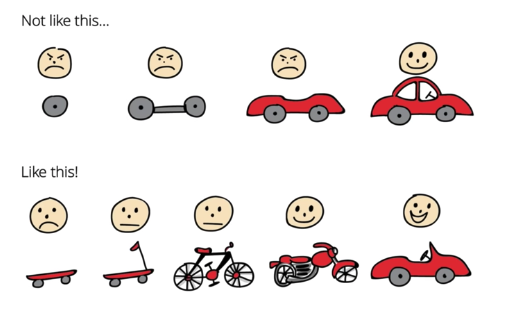
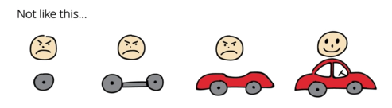
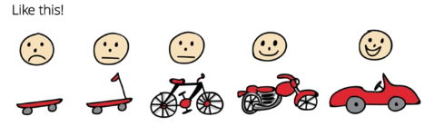

Minimum Viable Product
I'd like to acknowledge Crisp's Blog as well as the book 'The Lean Startup: How Today's Entrepreneurs Use Continuous Innovation to Create Radically Successful Businesses' by Jeff Sutherland for helping me grasp MVP as well being the backbone of the development this post.
A couple of years ago Henrik, Kniberg drew this picture about agile and lead development.
The picture is about product development using a car.
First, not like this... many product fail because they build the product until it's 100 percent done and then deliver it right at the very end. Each iteration delivered to a Product Manager, Product Owner, or early adopter, will be unuseable and thus the customer will be upset and possibly not understand what it is they're looking at. When the product is done, the customer feels the previous delieveres we're useless. A lot of time has passed without any user testing. The product might be riddled with design flaws and based on incorrect assumptions on what people need. Although it may seem agile at first because it is incremental and iterative but the abcense of a feedback loop makes it very risky and definitely not agile.
Second, like this! We have the same context here, instead of building a car, we are building on the underlying need of the customer: to get from point A to point B. The team delievers the smallest thing they can deliever to the product so they can start testing it and providing feedback. Also known as the Minimum Viaable Product. The customer is unliekly to be happy with the first iteration, a skateboard, but this is okay, because our main goal is to learn, and we have let the customer know of this. The skateboard is an actual usable product. They can get from point A to point B. We tell the customer, don't worry, this is just the beginning and there are many more iterations after this. But for now, just try this and give us as much feedback as you can.
Suppose the customer says that they love everything about the skateboard, but hate the skateboard's color. Instead of a red skateboard, they want a green skateboard. Well, all we have to do now is change the skateboard's color and we just saved a lot of money. No need to make a bicycle or even a car. All the customer wanted was a green skateboard. Here, we asked, what is the cheapest and fastest way we can start learning? Maybe we can deliever something even before the skateboard, like a taxi. Will this be the cheapest and fastest way we can start learning? We'll definitely learn something by using these sysmtatic validations.
But anyway, let's say the customer likes the skateboard but has some complaints: the skateboard is dangerous and unstable. So we make a scooter. The customer tries the scooter and likes it, but complains about the lack of brakes. So, we then release a bicycle in our next iteration. The customer loves it. It's everything they wanted. Here, we again, saved money by not having to create a car because all the customer wanted was a bicycle. Prototyping and releasing is best because that is where the real learning happens.
Anyways, once again, maybe the customer gets tired peddling the bicycle. So for our next iteration, we release a motorcycle. Now the customer can travel without having to peddle and doesn't get tired. Maybe the customer is happy with the motorcycle. We can end the product development earlier than planned. Most products are riddled with complexity and features no one uses. The iterative approach is less and fines the cheapest way to solve the customers problem. We're minizing the distance to awesomeness. The customer can choose to continue without modifications.
We might end with a car as the not like this example, but it is much more likely that we gain vital insights along the way and end up withsomething slightly different. The customer is overjoyed because we learned along the way and he apprieciates fresh air in his face. So we end up a convertable. We ended up with a car, but a car the customer wanted: a convertable.
In conclusion, what's your skateboard? In product development, the first thing you should do after discovering your problem is finding out your skateboard equivalent. Finding a metaphor for the smallest thing you can get in the hands of the users and get feedback. This gives us the vitally needed feedback loop that gives us and the customer control over the product. You can learn and make changes instead of following the plan and hoping for the best.